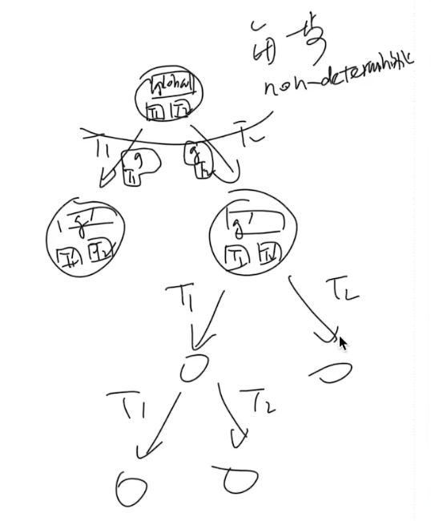
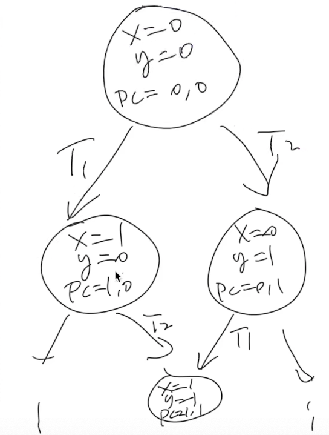
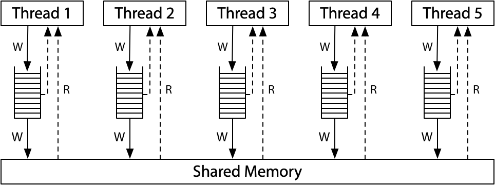
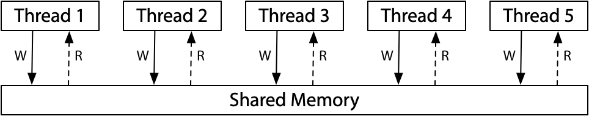

多处理器编程：从入门到放弃
一定要看老师视频课 https://www.bilibili.com/video/BV13u411X72Q 1:14:13 之后的内容，全是重点
Overview
复习
- 程序 (源代码S、二进制代码C) = 状态机
- 编译器 C=compile(S)
- 应用视角的操作系统 = syscall 指令
本次课回答的问题
- Q: 在多处理器时代，上面的理解应该作出怎样的变化？
本次课主要内容
- 并发程序的状态机模型
- 线程库
thread.h - 多线程带来的麻烦
收获
1、如何理解多处理器系统？
Q: 在多处理器时代，应该怎样理解？
- 多处理器编程：入门
- 多处理器程序 = 状态机 (共享内存；非确定选择线程执行)
- thread.h = create + join
- 多处理器编程：放弃你对 “程序” 的旧理解
- 不原子、能乱序、不立即可见
- 来自于编译优化 (处理器也是编译器)
并发的基本单位：线程，共享内存的多个执行流
- 执行流拥有独立的堆栈/寄存器
- 共享全部的内存 (指针可以互相引用)
2、多处理器系统中线程的代码并发执行带来的风险
1）原子性的丧失
“程序 (甚至是一条指令) 独占处理器执行” 的基本假设在现代多处理器系统上不再成立。
原子性：一段代码执行 (例如 pay()) 独占整个计算机系统
- 单处理器多线程
- 线程在运行时可能被中断，切换到另一个线程执行
- 多处理器多线程
- 线程根本就是并行执行的
互斥和原子性是本学期的重要主题：
99% 的并发问题都可以用一个队列解决
- 把大任务切分成可以并行的小任务
- worker thread 去锁保护的队列里取任务
- 除去不可并行的部分，剩下的部分可以获得线性的加速
2）顺序的丧失
编译器对内存访问 “eventually consistent” 的处理导致共享内存作为线程同步工具的失效。
实现源代码的按顺序翻译？
在 while 代码中插入 “优化不能穿越” 的 barrier
asm volatile ("" ::: "memory");- Barrier 的含义是 “可以读写任何内存”
- 使用
volatile变量 - 保持 C 语义和汇编语义一致
3）可见性的丧失
现代处理器：处理器也是 (动态) 编译器！
单个处理器把汇编代码 (用电路) “编译” 成更小的 μops
在任何时刻，处理器都维护一个 μop 的 “池子”
- 每一周期向池子补充尽可能多的 μop
- “多发射”
- 每一周期 (在不违反编译正确性的前提下) 执行尽可能多的μop
- “乱序执行”、“按序提交”
- 这就是《计算机体系结构》 (剩下就是木桶效应，哪里短板补哪里）
多处理器间即时可见性的丧失
满足单处理器 eventual memory consistency 的执行，在多处理器上可能无法序列化！
一、入门
1、Three Easy Pieces: 并发
Concurrent: existing, happening, or done at the same time.
In computer science, concurrency refers to the ability of different parts or units of a program, algorithm, or problem to be executed out-of-order or in partial order, without affecting the final outcome. (Wikipedia)
为什么在这门课 (先) 讲并发？
- 讲并发
- 操作系统是最早的并发程序之一
- 今天遍地都是多处理器系统 (为什么？)
- 先讲并发
- 实验是 bottom-up 的 (L1: 多处理器上的
malloc/free)
系统调用的代码是世界上最早的并发程序
2、并发的基本单位：线程
共享内存的多个执行流
- 执行流拥有独立的堆栈/寄存器
- 共享全部的内存 (指针可以互相引用)
用状态机的视角就很容易理解了！

3、入门：thread.h 简化的线程 API
我们为大家封装了超级好用的线程 API (thread.h)
create(fn)- 创建一个入口函数是
fn的线程，并立即开始执行void fn(int tid) { ... }- 参数
tid从 1 开始编号
- 语义：在状态中新增 stack frame 列表并初始化为
fn(tid) join()- 等待所有运行线程的
fn返回 - 在
main返回时会自动等待所有线程结束 - 语义：在有其他线程未执行完时死循环，否则返回
- 编译时需要增加
-lpthread
thread.h
#include <stdlib.h>
#include <stdio.h>
#include <string.h>
#include <stdatomic.h>
#include <assert.h>
#include <unistd.h>
#include <pthread.h>
#define NTHREAD 64
enum { T_FREE = 0, T_LIVE, T_DEAD, };
struct thread {
int id, status;
pthread_t thread;
void (*entry)(int);
};
struct thread tpool[NTHREAD], *tptr = tpool;
void *wrapper(void *arg) {
struct thread *thread = (struct thread *)arg;
thread->entry(thread->id);
return NULL;
}
void create(void *fn) {
assert(tptr - tpool < NTHREAD);
*tptr = (struct thread) {
.id = tptr - tpool + 1,
.status = T_LIVE,
.entry = fn,
};
pthread_create(&(tptr->thread), NULL, wrapper, tptr);
++tptr;
}
void join() {
for (int i = 0; i < NTHREAD; i++) {
struct thread *t = &tpool[i];
if (t->status == T_LIVE) {
pthread_join(t->thread, NULL);
t->status = T_DEAD;
}
}
}
__attribute__((destructor)) void cleanup() {
join();
}
Hello, Multi-threaded World!
a.c
#include "thread.h"
void Ta() { while (1) { printf("a"); } }
void Tb() { while (1) { printf("b"); } }
int main() {
create(Ta);
create(Tb);
}
利用 thread.h 就可以写出利用多处理器的程序！
- 操作系统会自动把线程放置在不同的处理器上
- 在后台运行，可以看到 CPU 使用率超过了 100%
如何证明线程确实共享内存？
#include "thread.h"
int x = 0;
void Thello(int id) {
// int x = 0;
usleep(id * 100000);
printf("Hello from thread #%c\n", "123456789ABCDEF"[x++]);
}
int main() {
for (int i = 0; i < 10; i++) {
create(Thello);
}
}
如何证明线程具有独立堆栈 (以及确定它们的范围)？
- stack-probe.c (输出有点乱？我们还有
sort!)
#include "thread.h"
__thread char *base, *cur; // thread-local variables
__thread int id;
// objdump to see how thread-local variables are implemented
__attribute__((noinline)) void set_cur(void *ptr) { cur = ptr; }
__attribute__((noinline)) char *get_cur() { return cur; }
void stackoverflow(int n) {
set_cur(&n);
if (n % 1024 == 0) {
int sz = base - get_cur();
printf("Stack size of T%d >= %d KB\n", id, sz / 1024);
}
stackoverflow(n + 1);
}
void Tprobe(int tid) {
id = tid;
base = (void *)&tid;
stackoverflow(0);
}
int main() {
setbuf(stdout, NULL);
for (int i = 0; i < 4; i++) {
create(Tprobe);
}
}
$ gcc a.c -lpthread && ./a.out
# 命令行所有的输出排序
$ gcc a.c -lpthread && ./a.out | sort -nk 6
...
Stack size of T4 >= 8000 KB
Stack size of T2 >= 8064 KB
Stack size of T4 >= 8064 KB
Stack size of T2 >= 8128 KB
Stack size of T4 >= 8128 KB
可以联想到，每个栈的大小是 8128 KB
// a.c
#include "thread.h"
void Ta() { while (1) { ; } }
int main() {
create(Ta);
}
$ gcc a.c -lpthread
如何观察是哪个系统调用创建了线程？
$ strace ./a.out
execve("./a.out", ["./a.out"], 0x7fff877ef750 /* 28 vars */) = 0
brk(NULL) = 0x56179c316000
access("/etc/ld.so.nohwcap", F_OK) = -1 ENOENT (No such file or directory)
access("/etc/ld.so.preload", R_OK) = -1 ENOENT (No such file or directory)
openat(AT_FDCWD, "/etc/ld.so.cache", O_RDONLY|O_CLOEXEC) = 3
fstat(3, {st_mode=S_IFREG|0644, st_size=87483, ...}) = 0
mmap(NULL, 87483, PROT_READ, MAP_PRIVATE, 3, 0) = 0x7fe447e1c000
close(3) = 0
access("/etc/ld.so.nohwcap", F_OK) = -1 ENOENT (No such file or directory)
openat(AT_FDCWD, "/lib/x86_64-linux-gnu/libpthread.so.0", O_RDONLY|O_CLOEXEC) = 3
read(3, "\177ELF\2\1\1\0\0\0\0\0\0\0\0\0\3\0>\0\1\0\0\0000b\0\0\0\0\0\0"..., 832) = 832
fstat(3, {st_mode=S_IFREG|0755, st_size=144976, ...}) = 0
mmap(NULL, 8192, PROT_READ|PROT_WRITE, MAP_PRIVATE|MAP_ANONYMOUS, -1, 0) = 0x7fe447e1a000
mmap(NULL, 2221184, PROT_READ|PROT_EXEC, MAP_PRIVATE|MAP_DENYWRITE, 3, 0) = 0x7fe4479ea000
mprotect(0x7fe447a04000, 2093056, PROT_NONE) = 0
mmap(0x7fe447c03000, 8192, PROT_READ|PROT_WRITE, MAP_PRIVATE|MAP_FIXED|MAP_DENYWRITE, 3, 0x19000) = 0x7fe447c03000
mmap(0x7fe447c05000, 13440, PROT_READ|PROT_WRITE, MAP_PRIVATE|MAP_FIXED|MAP_ANONYMOUS, -1, 0) = 0x7fe447c05000
close(3) = 0
access("/etc/ld.so.nohwcap", F_OK) = -1 ENOENT (No such file or directory)
openat(AT_FDCWD, "/lib/x86_64-linux-gnu/libc.so.6", O_RDONLY|O_CLOEXEC) = 3
read(3, "\177ELF\2\1\1\3\0\0\0\0\0\0\0\0\3\0>\0\1\0\0\0\20\35\2\0\0\0\0\0"..., 832) = 832
fstat(3, {st_mode=S_IFREG|0755, st_size=2030928, ...}) = 0
mmap(NULL, 4131552, PROT_READ|PROT_EXEC, MAP_PRIVATE|MAP_DENYWRITE, 3, 0) = 0x7fe4475f9000
mprotect(0x7fe4477e0000, 2097152, PROT_NONE) = 0
mmap(0x7fe4479e0000, 24576, PROT_READ|PROT_WRITE, MAP_PRIVATE|MAP_FIXED|MAP_DENYWRITE, 3, 0x1e7000) = 0x7fe4479e0000
mmap(0x7fe4479e6000, 15072, PROT_READ|PROT_WRITE, MAP_PRIVATE|MAP_FIXED|MAP_ANONYMOUS, -1, 0) = 0x7fe4479e6000
close(3) = 0
mmap(NULL, 12288, PROT_READ|PROT_WRITE, MAP_PRIVATE|MAP_ANONYMOUS, -1, 0) = 0x7fe447e17000
arch_prctl(ARCH_SET_FS, 0x7fe447e17740) = 0
mprotect(0x7fe4479e0000, 16384, PROT_READ) = 0
mprotect(0x7fe447c03000, 4096, PROT_READ) = 0
mprotect(0x56179a63f000, 4096, PROT_READ) = 0
mprotect(0x7fe447e32000, 4096, PROT_READ) = 0
munmap(0x7fe447e1c000, 87483) = 0
set_tid_address(0x7fe447e17a10) = 29506
set_robust_list(0x7fe447e17a20, 24) = 0
rt_sigaction(SIGRTMIN, {sa_handler=0x7fe4479efcb0, sa_mask=[], sa_flags=SA_RESTORER|SA_SIGINFO, sa_restorer=0x7fe4479fc980}, NULL, 8) = 0
rt_sigaction(SIGRT_1, {sa_handler=0x7fe4479efd50, sa_mask=[], sa_flags=SA_RESTORER|SA_RESTART|SA_SIGINFO, sa_restorer=0x7fe4479fc980}, NULL, 8) = 0
rt_sigprocmask(SIG_UNBLOCK, [RTMIN RT_1], NULL, 8) = 0
prlimit64(0, RLIMIT_STACK, NULL, {rlim_cur=8192*1024, rlim_max=RLIM64_INFINITY}) = 0
mmap(NULL, 8392704, PROT_NONE, MAP_PRIVATE|MAP_ANONYMOUS|MAP_STACK, -1, 0) = 0x7fe446df8000
mprotect(0x7fe446df9000, 8388608, PROT_READ|PROT_WRITE) = 0
brk(NULL) = 0x56179c316000
brk(0x56179c337000) = 0x56179c337000
clone(child_stack=0x7fe4475f7fb0, flags=CLONE_VM|CLONE_FS|CLONE_FILES|CLONE_SIGHAND|CLONE_THREAD|CLONE_SYSVSEM|CLONE_SETTLS|CLONE_PARENT_SETTID|CLONE_CHILD_CLEARTID, parent_tidptr=0x7fe4475f89d0, tls=0x7fe4475f8700, child_tidptr=0x7fe4475f89d0) = 29507
futex(0x7fe4475f89d0, FUTEX_WAIT, 29507, NULL
可以猜到是最后的 clone 系统调用，创建了线程
更多的习题
- 创建线程使用的是哪个系统调用？
- 能不能用 gdb 调试？
- 基本原则：有需求，就能做到 (RTFM)
4、thread.h 背后：POSIX Threads
想进一步配置线程？
- 设置更大的线程栈
- 设置 detach 运行 (不在进程结束后被杀死，也不能 join)
- ……
POSIX 为我们提供了线程库 (pthreads)
man 7 pthreads- 练习：改写 thread.h，使得线程拥有更大的栈
- 可以用 stack-probe.c 验证
然而，可怕的事情正在悄悄逼近……
- 多处理器系统中线程的代码可能同时执行
- 两个线程同时执行
x++，结果会是什么呢？
二、放弃 (1)：原子性
1、例子：山寨多线程支付宝
unsigned int balance = 100;
int Alipay_withdraw(int amt) {
if (balance >= amt) {
balance -= amt;
return SUCCESS;
} else {
return FAIL;
}
}
两个线程并发支付 ¥100 会发生什么？alipay.c
- 账户里会多出用不完的钱！
- Bug/漏洞不跟你开玩笑：Mt. Gox Hack 损失 650,000
- 今天价值 $28,000,000,000
2、例子：求和
分两个线程，计算 1+1+1+…+1 (共计 2n 个 1)
#define N 100000000
long sum = 0;
void Tsum() { for (int i = 0; i < N; i++) sum++; }
int main() {
create(Tsum);
create(Tsum);
join();
printf("sum = %ld\n", sum);
}
sum.c 运行结果
- 119790390, 99872322 (结果可以比
N还要小), ... - Inline assembly 也不行
加上 lock，但程序速度明显下降
#define N 100000000
long sum = 0;
void Tsum() {
for (int i = 0; i < n; i++) {
asm volatile("lock add $1, %0": "+m"(sum));
}
}
int main() {
create(Tsum);
create(Tsum);
join();
printf("sum = %ld\n", sum);
}
3、原子性的丧失
“程序 (甚至是一条指令) 独占处理器执行” 的基本假设在现代多处理器系统上不再成立。
原子性：一段代码执行 (例如 pay()) 独占整个计算机系统
- 单处理器多线程
- 线程在运行时可能被中断，切换到另一个线程执行
- 多处理器多线程
- 线程根本就是并行执行的
(历史) 1960s，大家争先在共享内存上实现原子性 (互斥)
- 但几乎所有的实现都是错的，直到 Dekker's Algorithm，还只能保证两个线程的互斥
4、原子性的丧失：有没有感到后怕？
printf 还能在多线程程序里调用吗？
我们都知道 printf 是有缓冲区的 (为什么？)
- 如果执行
buf[pos++] = ch(pos共享) 不就 💥 了吗？
RTFM!
5、实现原子性
互斥和原子性是本学期的重要主题
lock(&lk)unlock(&lk)- 实现临界区 (critical section) 之间的绝对串行化
- 程序的其他部分依然可以并行执行
99% 的并发问题都可以用一个队列解决
- 把大任务切分成可以并行的小任务
- worker thread 去锁保护的队列里取任务
- 除去不可并行的部分，剩下的部分可以获得线性的加速
- Thm. Tn<T∞+T1/n (PDC, Chap. 1)
三、放弃 (2)：顺序
1、例子：求和 (再次出现)
分两个线程，计算 1+1+1+…+1 (共计 2n 个 1)
#define N 100000000
long sum = 0;
void Tsum() { for (int i = 0; i < N; i++) sum++; }
int main() {
create(Tsum);
create(Tsum);
join();
printf("sum = %ld\n", sum);
}
我们好像忘记给 sum.c 添加编译优化了？
-O1:gcc -O1 sum.c -lpthread && ./a.out100000000 😱😱-O2:gcc -O2 sum.c -lpthread && ./a.out200000000 😱😱😱- 循环看下结果：
while true; ./a.out; end
2、顺序的丧失
编译器对内存访问 “eventually consistent” 的处理导致共享内存作为线程同步工具的失效。
刚才的例子
-O1:R[eax] = sum; R[eax] += N; sum = R[eax]-O2:sum += N;- (你的编译器也许是不同的结果)
另一个例子
3、实现源代码的按顺序翻译
在 while 代码中插入 “优化不能穿越” 的 barrier
asm volatile ("" ::: "memory");- Barrier 的含义是 “可以读写任何内存”
- 使用
volatile变量 - 保持 C 语义和汇编语义一致
四、放弃 (3)：可见性
1、例子
int x = 0, y = 0;
void T1() {
x = 1;
asm volatile("" : : "memory"); // compiler barrier
printf("y = %d\n", y);
}
void T2() {
y = 1;
asm volatile("" : : "memory"); // compiler barrier
printf("x = %d\n", x);
}
问题：我们最终能看到哪些结果？
一定要画出状态机，才能理解并发程序执行的行为
可以是01、10、11，无论如何不可能是 00

- mem-ordering.c
- 输出不好读？pipe to
head -n 1000000 | sort | uniq -c
#include "thread.h"
int x = 0, y = 0;
atomic_int flag;
#define FLAG atomic_load(&flag)
#define FLAG_XOR(val) atomic_fetch_xor(&flag, val)
#define WAIT_FOR(cond) while (!(cond)) ;
__attribute__((noinline))
void write_x_read_y() {
int y_val;
asm volatile(
"movl $1, %0;" // x = 1
"movl %2, %1;" // y_val = y
: "=m"(x), "=r"(y_val) : "m"(y)
);
printf("%d ", y_val);
}
__attribute__((noinline))
void write_y_read_x() {
int x_val;
asm volatile(
"movl $1, %0;" // y = 1
"movl %2, %1;" // x_val = x
: "=m"(y), "=r"(x_val) : "m"(x)
);
printf("%d ", x_val);
}
void T1(int id) {
while (1) {
WAIT_FOR((FLAG & 1));
write_x_read_y();
FLAG_XOR(1);
}
}
void T2() {
while (1) {
WAIT_FOR((FLAG & 2));
write_y_read_x();
FLAG_XOR(2);
}
}
void Tsync() {
while (1) {
x = y = 0;
__sync_synchronize(); // full barrier
usleep(1); // + delay
assert(FLAG == 0);
FLAG_XOR(3);
// T1 and T2 clear 0/1-bit, respectively
WAIT_FOR(FLAG == 0);
printf("\n"); fflush(stdout);
}
}
int main() {
create(T1);
create(T2);
create(Tsync);
}
2、现代处理器：处理器也是 (动态) 编译器！
单个处理器把汇编代码 (用电路) “编译” 成更小的 μops
- RF[9] = load(RF[7] + 400)
- store(RF[12], RF[13])
- RF[3] = RF[4] + RF[5]
- 每个 μop 都有 Fetch, Issue, Execute, Commit 四个阶段
在任何时刻，处理器都维护一个 μop 的 “池子”
- 每一周期向池子补充尽可能多的 μop
- “多发射”
- 每一周期 (在不违反编译正确性的前提下) 执行尽可能多的μop
- “乱序执行”、“按序提交”
- 这就是《计算机体系结构》 (剩下就是木桶效应，哪里短板补哪里）
3、多处理器间即时可见性的丧失
满足单处理器 eventual memory consistency 的执行，在多处理器上可能无法序列化！
当 x≠y 时，对 x, y 的内存读写可以交换顺序
- 它们甚至可以在同一个周期里完成 (只要 load/store unit 支持)
- 如果写 x 发生 cache miss，可以让读 y 先执行
- 满足 “尽可能执行 μop” 的原则，最大化处理器性能
- 在多处理器上的表现
- 两个处理器分别看到 y=0 和 x=0
4、宽松内存模型 (Relaxed/Weak Memory Model)
宽松内存模型的目的是使单处理器的执行更高效。
x86 已经是市面上能买到的 “最强” 的内存模型了 😂
- 这也是 Intel 自己给自己加的包袱
- 看看 ARM/RISC-V 吧，根本就是个分布式系统
{kind=link}
ARM/RISC-V：

(x86-TSO in Hardware memory models by Russ Cox)

5、实现顺序一致性

软件做不到，硬件来帮忙
- Memory barrier:__sync_synchronize() RTFM:https://gcc.gnu.org/onlinedocs/gcc/_005f_005fsync-Builtins.html
- Compiler barrier + fence 指令
- 插入 fence 指令后，将阻止 x=y=0
- 原子指令 (lock prefix, lr/sc, ...)
stdatomic.h
总结
本次课回答的问题
- Q: 如何理解多处理器系统？
Take-away message
- 多处理器编程：入门
- 多处理器程序 = 状态机 (共享内存；非确定选择线程执行)
- thread.h = create + join
- 多处理器编程：放弃你对 “程序” 的旧理解
- 不原子、能乱序、不立即可见
- 来自于编译优化 (处理器也是编译器)
- Ad hoc synchronization considered harmful (OSDI'10)
- 不原子、能乱序、不立即可见